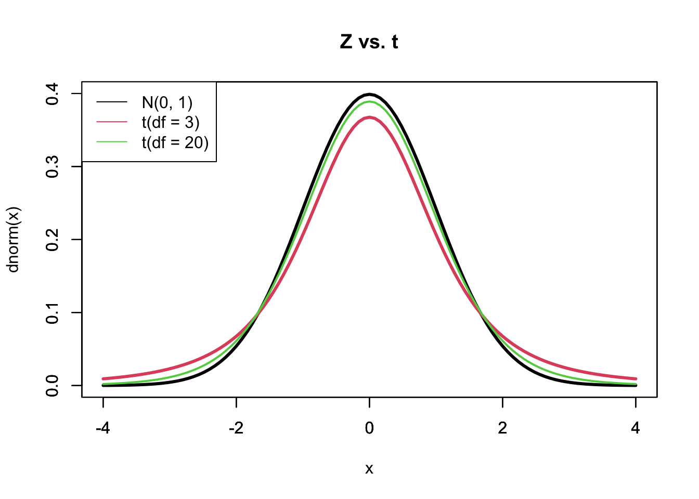

7.6 区間推定
点推定の節で示した通り、推定値と未知パラメータの間には、ずれ（誤差）がある。標本平均の様に好ましい性質（不偏性や一致性）を持つ推定量であっても、計算の結果示された一つの推定値がどの程度信頼できるものなのかはわからない。そこで区間推定という、未知パラメータ（母平均等）を一定の確率（信頼水準）で含む区間を計算する方法を用いて、統計的な誤差を加味した母数への検討を試みる。区間推定においては、「信頼水準zz%で、xx以上、yy以下という区間は真の母数を含む」という区間[xx, yy]を調べる。このような区間は信頼区間（confidence interval）と呼ばれ、多くの統計分析において用いられている。
Rで信頼区間を求める事自体は難しくない。最も手間のかからない方法としては、t.test()（詳細は後述）の分析結果を用いて、conf.int()によって信頼区間が計算できる。信頼区間の計算を実行するために、倉田・星野（2011, p.248）で提示されている以下の電球の製品寿命に関する例を考える。ある製品（電球）の寿命は平均1700（時間）である。企業は性能を改良するために新型の電球が開発したが、新型化に伴い製品寿命も変化したのかについては不明である。ただし、この製品の寿命は新型も旧型のものも正規分布に従い、その標準偏差は \(\sigma=\) 180（時間）であると仮定する。
工場で生産された新型製品を16個無作為に選びその寿命を計測した所、以下の結果を得た。
| 1873 | 1685 | 2275 | 1760 | 1769 | 2176 | 1748 | 1760 | 1994 | 1473 | 1715 | 1771 | 1784 | 1684 | 2038 | 1850 |
このデータは、平均が \(\small \mu\)、分散が \(\small 180^2\) である正規分布（\(\small N(\mu, \sigma^2=180^2)\) と表記する）からの無作為標本 \(X_1,..., X_{16}\)の実現値とみなすことができる。なお、このデータの標本平均は1,835（時間）、不偏標本標準偏差は 200である。このデータに基づく、新型電球寿命の期待値に関する95% 信頼区間（95%の確率で真の母数を含む区間）はt.test() 関数を用いると以下の様に求まる（ただし後述するが、この方法はこの例に対しては適切ではない）。
bulb <- c(1873, 1685, 2275, 1760, 1769, 2176, 1748, 1760, 1994, 1473, 1715, 1771, 1784, 1684, 2038, 1850)
bulb_ci <- t.test(bulb) #t検定の実施と格納
bulb_ci$conf.int #信頼区間の出力（デフォルトで95%信頼水準）## [1] 1728.235 1941.140
## attr(,"conf.level")
## [1] 0.95出力されている [1] 1728.235 1941.140 が信頼区間、## attr(,"conf.level") ## [1] 0.95 が今回計算に用いられた信頼水準（confidence level）（もしくは信頼係数（confidence coefficient）ともいう）である。 分析の結果、95%の確率で真の新製品寿命期待値が 1728.2 から 1941.1 の間に含まれることがわかった。したがって、どうやら新製品寿命は平均的に旧型製品（1,700）よりも長そうである。では、ここで示された区間がどのように計算され、どのようなことを意味するのだろうか。以下では、一度電球の例から離れ、もう少し一般的な形で信頼区間の導出や解釈を説明する。
はじめに、標準正規分布に基づくある区間の確率の求め方を説明する。 \(Z_1,Z_2,...,Z_n\) は、N(0, 1) （標準正規分布）に従う母集団からの無作為標本とする。このとき、標準正規分布がある区間 [\(-\infty,~z_\alpha\)] をとる確率は、以下の式および図のように示すことができる7。なお、\(\small z_\alpha\) は、確率\(\small \alpha\) に対応する標準正規分布上の上側確率 \(\small \alpha\) 点とする。このとき、この分布における \(\small z_\alpha\) 以下（以上）の範囲を取る確率は 1 \(\small -\alpha\)（\(\small \alpha\)） である。
\[ P(Z\leq z_\alpha) = \int^{z_\alpha}_{-\infty}~f(z)~dz =\int^{z_\alpha}_{-\infty}~\frac{1}{\sqrt{2\pi}}\exp\left(-\frac{z^2}{2}\right)~ dz = 1-\alpha \]
同様に、以下のような関係も捉えることができる。この場合、斜線部で示されている範囲の確率は両側合わせて \(\small \alpha\) であり、その内側の確率は 1 \(\small - \alpha\) である。
\[ P(-z_{\alpha/2} \leq Z\leq z_{\alpha/2}) = \int^{z_{\alpha/2}}_{-z_{\alpha/2}}~f(z)~dz = 1-\alpha \]
上述の関係を、区間推定に応用するために、あるデータの標本平均に関する議論を捉える。標準正規分布に従う確率変数は、正規分布に従う確率変数を標準化することで得ることができる。ここで、\(\small X_1,...,X_n\) を、期待値 \(\small \mu\)、分散 \(\small \sigma^2\) の正規分布に従う母集団からの無作為標本とする。これまで学んだ標準化および標本平均の特性から、以下の通り、標本平均を標準化したものは標準正規分布に従うことがわかる。
\[ \frac{\bar{X}-\mu}{\sqrt{\sigma^2/n}}\sim N(0,1) \] このことから、先述の標準正規分布における確率計算の関係を応用し、以下を得る。
\[ P\left(-z_{\alpha/2}\leq \frac{\bar{X}-\mu}{\sqrt{\sigma^2/n}}\leq z_{\alpha/2}\right)=1-\alpha \]
上記の式に基づき、未知の母平均 \(\small \mu\) についての区間として整理すると、以下の式を得る。
\[ P\left(\bar{X}-z_{\alpha/2}\cdot \frac{\sigma}{\sqrt{n}}\leq \mu \leq \bar{X}+z_{\alpha/2}\cdot \frac{\sigma}{\sqrt{n}}\right)=1-\alpha \] したがって、区間 [\(\small \bar{X}\pm z_{\alpha/2}\cdot \sigma/\sqrt{n}\)] は、確率 \(\small 1-\alpha\) で未知の母平均 \(\small \mu\) を含むと解釈できる。また、上記の関係から任意の確率 \(\alpha\) を指定することで、区間の上限と下限（\(\pm z_{\alpha/2}\)）の具体的な値を（統計学テキスト巻末などに記載されている）標準正規分布表などから求めることができる。 そして、このような区間を「信頼区間」といい、信頼区間の計算にて仮定された確率 \(\small 1-\alpha\) を「信頼水準」もしくは「信頼係数」という。信頼係数は、信頼区間の計算のために研究者によって事前に選択される。慣習としては、90%, 95%や99% (\(\small \alpha =\) 0.10, 0.05, 0.01)を用いる事が多い。なお、信頼係数を大きくすると、信頼区間も広くなる。
上記の区間推定は母分散 \(\sigma^2\) が既知である場合に計算可能であるが、多くの場合母分散は未知である。そのような場合には、自由度 n-1 の「t分布」を用いて、両端の確率 \(\small \alpha\) 点を \(\small t_{\alpha/2}(n-1)\) とする信頼区間を求める。\(N(\mu,\sigma^2)\) に従う母集団からの無作為標本を考えるが、今回は母分散が未知である場合を仮定する。このような場合は、母分散 \(\small \sigma^2\) のかわりに母分散の不偏推定量である不偏標本分散 \(\small s^2\) を用いた以下の統計量 t をもとに信頼区間を計算する。このとき、統計量 t は自由度 n-1 の t 分布に従うことが知られている（t分布に関する詳細および証明は省略）。
\[ t=\frac{\bar{X}-\mu}{\sqrt{s^2/n}}\sim t(n-1) \]
ここで、先述の標準正規分布に基づくある区間の確率計算と同様の計算を、自由度 \(\small n-1\) のt分布に基づき実行すると、以下のような確率と区間の関係に書き換えることができる。
\[ P\left(-t_{\alpha/2}(n-1)\leq \frac{\bar{X}-\mu}{s^2/n}\leq t_{\alpha/2}(n-1)\right)=1-\alpha \]
上記の式に基づき、未知の母平均 \(\small \mu\) についての区間として整理すると、以下の式を得る。
\[ P\left(\bar{X}-t_{\alpha/2}(n-1)\cdot \frac{s}{\sqrt{n}}\leq \mu \leq \bar{X}+t_{\alpha/2}(n-1)\cdot \frac{s}{\sqrt{n}}\right)=1-\alpha \]
信頼区間を求めるための手順は標準正規分布の場合もt分布の場合も同様だが、標準正規分布のかわりに t 分布を用いた場合、特定の確率に対応する閾値が変わることが知られている（\(\small z_{\alpha/2}\neq t_{\alpha/2}(n-1)\)）。 t分布は、左右対称であり標準正規分布よりもテールが厚いという特徴を持つが、自由度が大きくなると正規分布に近づくことが知られている。標準正規分布と、自由度の異なる t 分布との関係は以下のように図示化できる。自由度（df）3の t 分布よりも自由度20の t 分布のほうが標準正規分布に近い形状であることが伺える。

標準正規分布と t 分布によってある確率に対応する閾値が異なるということは、ある信頼水準に対応する信頼区間も仮定する分布によって異なるということである。新型電球の例では正規分布を仮定しているため、標準正規分布により信頼区間を求める。 先述の通り、標準正規分布に基づく信頼区間は以下のように示すことができる。
\[ \bar{X}\pm z_{\alpha/2}\cdot \sigma/\sqrt{n} \] このとき、仮定より \(\small \bar{X}=1835\), \(\sigma=180\) であることがわかっている。また、慣習より95%信頼水準を仮定すると、確率 \(\small \alpha = 0.05\)となる。そのため、区間推定の計算で必要な要素のうち現時点で不明なのは、 \(z_{\alpha/2}=z_{0.025}\)の値である。この値は、任意の確率に対応する区間の閾値を表している。今回の場合、分布が左右対称の分布であり正負どちらか一方の値さえ分かればよいため、閾値（\(z_{0.025}\)）以上の区間を取る確率が2.5%になるような閾値に着目する。このような閾値は、Rによって以下のように求める（なお先述の通り、統計学教科書に掲載されている分布表を使っても同様の数値を求めることができる）。
## [1] 1.959964これにより、計算に必要な情報が揃ったため、以下の要領で信頼区間を出力できる。
n <- length(bulb)
z <- qnorm(0.025, lower.tail=FALSE)
xbar <- mean(bulb)
sigma <- 180
#信頼区間の計算
upper <- xbar+z*(sigma/sqrt(n))
lower <- xbar-z*(sigma/sqrt(n))
#結果のまとめと出力
ci.bulb <- matrix(c(lower,upper),nrow=1)
colnames(ci.bulb) <- c("ci.lower", "ci.upper")
knitr::kable(ci.bulb, caption = "Bulb data CI（95%）", align = "cc")| ci.lower | ci.upper |
|---|---|
| 1746.489 | 1922.886 |
分析の結果、新型製品の平均寿命に関する95%信頼区間は、標準正規分布と t 分布どちらの分布を仮定しても旧型の平均1700（時間）を含まず、それよりも大きい値を取るものであった。したがって、新型製品は製品寿命の面においても95%の確率で旧型製品よりも優れていると考えられる。
では、この95%信頼区間は、そもそもどのように解釈すべきだろうか。結論から述べると、95%信頼区間の直感的解釈については以下のように説明できる：
“「母集団からサンプルを取り平均値の95%信頼区間を構築する」という手順を100回繰り返すと考える。95%という信頼水準（確率）が示していることは、計算された区間が100回に95回は母数を含むということである。言い換えると、今回得た標本平均に基づき計算された信頼区間がはずれ（真の母数を含まない区間）である可能性が5%存在するということである。”
95%信頼区間の解釈として、「分析対象としている母数の値がこの区間の値をとる確率が95%である」という旨の説明を行う人がいるが、これは\(\color{red}{\text{誤り}}\)である。確率的な議論を母数に適応するのは適切ではない。確率的に変動するのはあくまで区間の両端である点を理解しなければならない。なぜならば、\(\small \bar{X}\) が確率変数であるため、そこから計算される区間の両端もまた確率変数となるためである（岩田，1996）。ここで示されている信頼水準は、計算された区間が真の母数を含んでいる確率である。つまり、信頼水準は、サンプルを収集し、信頼区間を求めるという「手順そのものに対する信頼度」を表す指標であると解釈できる。
また、分析の結果、t.test によって出力された信頼区間よりも短い区間を得た。これは、t 分布のほうがテールが厚く、中心より遠い値を取る確率密度が高いことから、95%水準における臨界値が標準正規分布に比べて大きくなるためである。また、t 分布の自由度が大きくなるにつれ、正規分布との差が小さくなる。
ただし、標準正規分布の確率密度関数 \(\small f(z)\) は、\(\small 1/\sqrt{2\pi}\exp\left(-z^2/2\right)\) だと知られている。↩︎